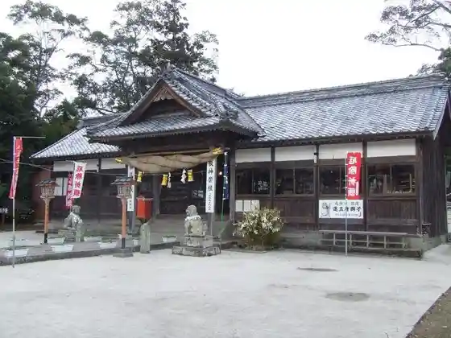
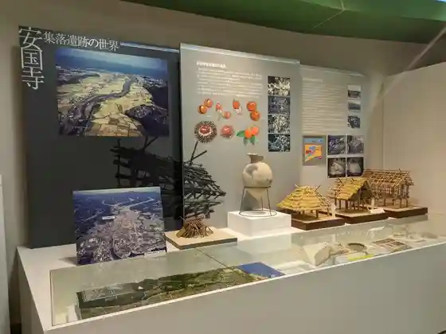
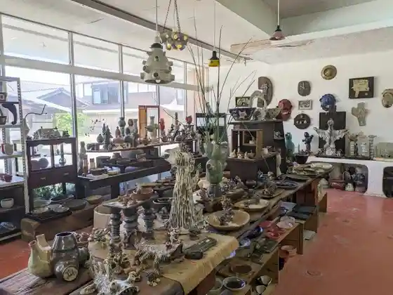

Kaiun Rodo Tomikuji
Kunisaki, Oita · Official / source link

Oita Airport
Kunisaki, Oita · 0570-07-1174 · Official / source link
Kunisaki Rekishi Taiken Gakushu Kan Yayoi no Mura Ankokuji Shuraku Iseki Park
Kunisaki, Oita · 0978-72-2677 · Official / source link

Workshop Raparoma
Kunisaki, Oita · 0978-82-0065 · Official / source link

Hyoso to Oto Ryo Sabo Sangaiya
Kunisaki, Oita · 0978-82-1328 · Official / source link
Kyu Sen to Jiseki
Kunisaki, Oita · 0978-72-5168 · Official / source link
Kunimi Seaside Park
Kunisaki, Oita · 0978-72-9191 · Official / source link
Umezono no Sato Tenmondai (Tenkyu Kan)
Kunisaki, Oita · 0978-97-2655 · Official / source link
Kaya Shima Shuzo
Kunisaki, Oita · 0978-72-1181 · Official / source link
Kunisaki Saikuringutaminaru
Kunisaki, Oita · 0978-72-3196 · Official / source link
Uchida Ryujin Beach Campground
Kunisaki, Oita · 0978-66-7556 · Official / source link
Monju Sen Tera
Kunisaki, Oita · 0978-74-1400 · Official / source link
Tendai Shu Bekkaku Honzan Ryoko Tera (Futagoji)
Kunisaki, Oita · 0978-65-0253 · Official / source link
Ryoko Kawara Za
Kunisaki, Oita · 0978-64-6305 · Official / source link
Umezono Village
Kunisaki, Oita · 0978-64-6300 · Official / source link
Miura Umezono Museum
Kunisaki, Oita · 0978-64-6311 · Official / source link
Ruri Mitsudera
Kunisaki, Oita · 0978-65-0528 · Official / source link
Kunimi Oto Campground
Kunisaki, Oita · 080-2705-9230 · Official / source link
Roadside Station Kunimi
Kunisaki, Oita · 0978-89-7117 · Official / source link
Oita no Sora Musashi
Kunisaki, Oita · 0978-69-0056 · Official / source link
Ramen Kafe Myojo
Kunisaki, Oita · 0978-84-0789 · Official / source link
Seiho Tera no Mitsumata
Kunisaki, Oita · 0978-72-5168 · Official / source link
Kunisaki Peninsula Mine Michi Rongutoreiru
Kunisaki, Oita · Official / source link
Aki Damu Park
Kunisaki, Oita · Official / source link
Sho On (Shon) Jiho to
Kunisaki, Oita · 0978-68-0306 · Official / source link
Onizuka Burial Mound
Kunisaki, Oita · Official / source link
Yoshiki Kokonoe to
Kunisaki, Oita · 0978-72-1111 · Official / source link
Omitsu Tera
Kunisaki, Oita · 0978-84-0530 · Official / source link
Kan Kiyoshi (Kansei) Tera
Kunisaki, Oita · 0978-67-2323 · Official / source link
Gyo Nyu (Gyonyu) Tera
Kunisaki, Oita · 0978-72-2802 · Official / source link
Shrine Tera
Kunisaki, Oita · 0978-72-4066 · Official / source link
Jobutsu (Jobutsu) Tera
Kunisaki, Oita · 0978-76-0626 · Official / source link
Chokei Tera
Kunisaki, Oita · Official / source link
Sen to Tera
Kunisaki, Oita · 0978-82-0572 · Official / source link
Seijo Hikari (Shojoko) Tera
Kunisaki, Oita · Official / source link
Takara Inochi (Homei) Tera
Kunisaki, Oita · 0978-68-1687 · Official / source link
Hon (Hon) Tera
Kunisaki, Oita · 0978-69-0747 · Official / source link
Marusho Nodera
Kunisaki, Oita · 0978-69-0045 · Official / source link
Go Hijiri (Gosho) Tera
Kunisaki, Oita · 0978-66-0559 · Official / source link
Ogi (Ogi) Kannon
Kunisaki, Oita · Official / source link
Imi Betsumiya Sha (Imibetsugusha)
Kunisaki, Oita · 0978-82-0435 · Official / source link
Rai Ura (Ku no Ura) Kyanpu Beach
Kunisaki, Oita · 0978-72-5168 · Official / source link
Gyo Nyu (Gyonyu) Dam
Kunisaki, Oita · 0978-72-3349 · Official / source link
Itsutsuji Fudo Mikoto
Kunisaki, Oita · 0978-72-5168 · Official / source link
Furusato Market R213
Kunisaki, Oita · 0978-67-3362 · Official / source link
Roadside Station Kunisaki
Kunisaki, Oita · 0978-72-3196 · Official / source link
Raku Niwa (Gakuniwa) Hachiman Sha (Yoshihiro Raku)
Kunisaki, Oita · 0978-72-2677 · Official / source link
Iwato Tera (Iwatoji)
Kunisaki, Oita · 0978-77-0537 · Official / source link
Kunimi Furusato Tenjikan
Kunisaki, Oita · 0978-83-0321 · Official / source link
Daishoji
Kunisaki, Oita · Official / source link
Kaya Shima (Kayashima) Shuzo
Kunisaki, Oita · 0978-72-1181 · Official / source link
Ryoko (Futago) Yama
Kunisaki, Oita · Official / source link
Gyararii Takumi Village Hana (Sekibutsu Hori Experience)
Kunisaki, Oita · 0978-82-0822 · Official / source link
Kunisaki Yakusho
Kunisaki, Oita · 0978-72-1111 · Official / source link